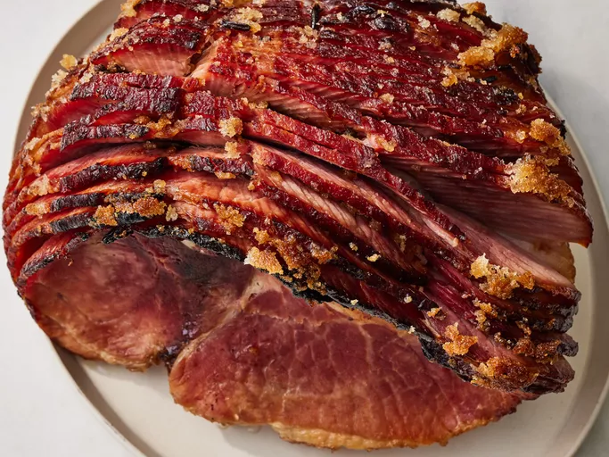

Baked Ham

Description
My whole family loves this baked ham that's topped with brown sugar and baked with moist heat. So delicious!
This holiday-perfect baked ham recipe, made with just four ingredients, will quickly become a tradition in your household.
Ingredients
-
Ham: You'll need the rump portion of a bone-in ham. If your ham is larger or smaller than 12 pounds, you'll need to make some adjustments.
-
Cloves: Whole cloves add warmth and a certain depth of flavor.
-
Sugar: Brown sugar lends more warmth and welcome sweetness.
-
Water: Use about an inch of water. This isn't one-size-fits-all, as different roasting pans will need different amounts.
Steps
- Press cloves into the top of the ham. Pack with brown sugar.
- Add water to the roasting pan.
- Bake in the preheated oven until the ham is done.